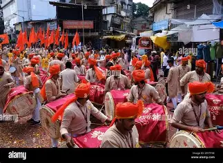
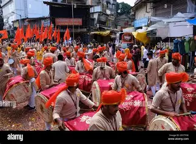
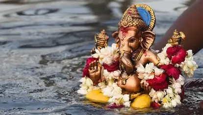
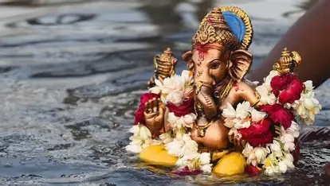
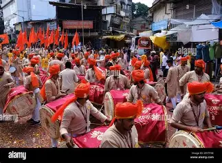
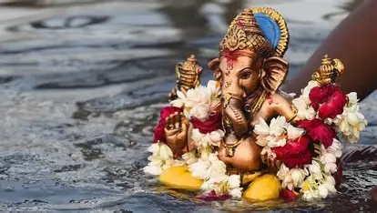

Ganpati Bappa Gallery
 

 

Listen to the devotional Aarti of Lord Ganesha
🔊 Click ▶️ Play to start the Aarti


🌸 Our Vision: Dedicated to preserving Indian culture, spirituality, and social values. Every year, during Ganesh Utsav, we unite people to celebrate Lord Ganesha.
🌍 Ganpati Bappa inspires us to live with harmony and kindness. गणपती बाप्पा मोरया! 🌺